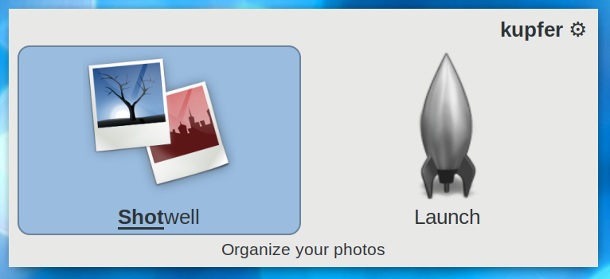

kupfer, a smart, quick launcher
Kupfer is an interface for quick and convenient access to applications and their documents.
The most typical use is to find a specific application and launch it. We have tried to make Kupfer easy to extend with plugins so that this quick-access paradigm can be extended to many more objects than just applications.
We hope that using Kupfer is fun!
Latest version
Feature Highlight
Kupfer is a keyboard-focused interface and very configurable. You can set accelerator keys to often used actions, see the PR for more information and screenshots.
Get Kupfer from your distribution
- Ubuntu and Debian
- Kupfer is available in the repository under the package name kupfer, you can install it with your package manager.
- Ubuntu PPA
- Kupfer v30x by WebUpd8 team
- Arch Linux
- Kupfer is available in the community repositories (AUR)
Installation from Source
See the README.rst for more information!
Documentation
Links
- github repository is at https://github.com/kupferlauncher/kupfer
- Talk about Kupfer on IRC at the irc.freenode.net channel
#kupfer(Connect with Web Client)